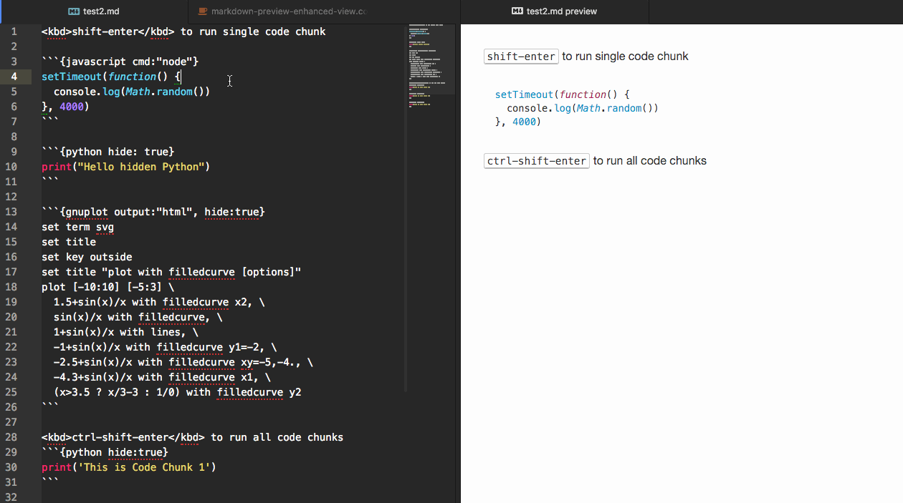

文本编辑器之路
最近一直试玩一个神器 -- Atom。据说这个是 github 运用了当前最先进、流行的技术倾力打造的，被称为“属于21世纪”的，免费并且开源的，文本（代码）编辑利器。配合几个插件，功能确实很惊艳。但缺点是速度比较慢，吃CPU。
在此之前，接触了一段时间的 Sublime Text，在其官方网站最开始的位置，以 gif 动画的形式展示了几个拿手功能，当年就是被这个一下子吸引的。但是这货好像已经不怎么更新了，虽然流行且插件也蛮丰富，但却是收费软件。Atom 的操作方式跟 Sublime Text 非常接近，转换的成本并不高。Sublime Text 优点是速度很快，稳定。
在此之前，电脑里一直装有 notepad++，现在也有，作为一些文件的快速打开查看，主要是替代系统默认的记事本，快速查看一下文件用。基本不用来编辑文本。
插件安装
Atom 的安装使用就不说了，其网站上介绍蛮详细的。但是插件安装却很让人头疼，用代理也不总是能装的上。网上找到以下方法（命令行输入）：
npm config set registry https://registry.npm.taobao.org
apm config set registry https://registry.npm.taobao.org
推荐几个插件
1. hydrogen
Jupyter notebook 一直是日常数据分析中最主要的工作，有很多优点。但其工作流程总是让人觉得不是很方便。如果并不想图文并茂地保存并分享工作过程和成果，只是快速地处理一些数据，得到几个图或者一个结果的话，hydrogen 应该更好用。最近正在体验
2. markdown-preview-enhanced
能在编辑 markdown 的同时预览效果，并且能执行代码块，并将代码的输出结果以类似 notebook 的 inline 的形式插入预览文件中，最后直接保存为 pdf。
附一张插件网站上的演示图：

3. minimap
实现一个类似 Sublime Text 效果，用处不大。
4. vim-mode-plus
vim 爱好者的福音。一直想搞但搞不定 vim。